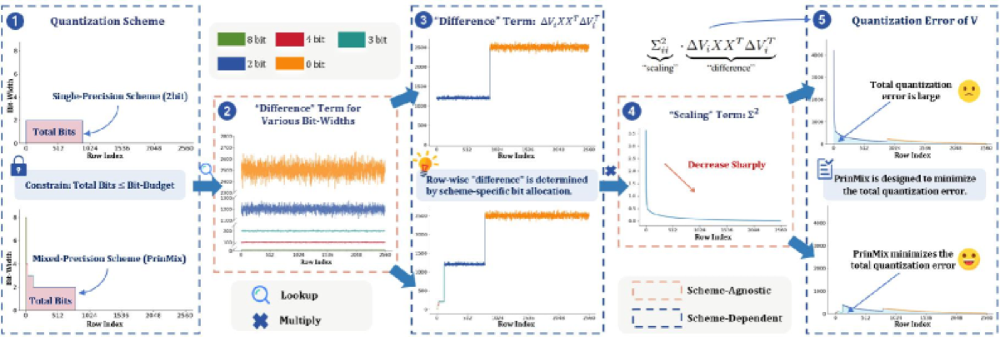

Why it matters왜 중요한가
The win isn't "use SVD" — it's replacing a folk heuristic with a provably-optimal bit budget.
핵심은 "SVD를 쓰자"가 아니라, 민간요법 같은 휴리스틱을 증명 가능한 최적 비트 예산으로 바꾼 것이다.
In multi-tenant serving, many users fine-tune the same base model, so you can ship one base plus many compressed deltas. Existing SVD methods like Delta-CoMe allocate bit-widths by a hypothesis — "vectors with bigger singular values are more important" — that prior work has shown does not reliably track LLM performance. PRINMIX rejects that. It derives the quantization error exactly, exposes a singular-value-dominated scaling term that mathematically requires mixed precision, and then lets an optimizer (not intuition) pick which rows get which bits under a user-chosen budget. The payoff is largest exactly where it's hard: deltas with a large ‖ΔW‖ norm (e.g. reasoning, multimodal models), where heuristic baselines fall apart.
멀티테넌트 서빙에서는 많은 사용자가 동일한 베이스 모델을 파인튜닝하므로, 베이스 하나 + 압축된 delta 여러 개로 배포할 수 있다. Delta-CoMe 같은 기존 SVD 기법은 "특이값이 큰 벡터가 더 중요하다"는 가설로 비트폭을 배분하지만, 선행 연구는 이 가설이 LLM 성능을 안정적으로 반영하지 못함을 보였다. PRINMIX는 이를 거부한다. 양자화 오차를 정확히 유도해 특이값이 지배하는 스케일링 항을 드러내고, 이것이 혼합정밀도를 수학적으로 요구함을 보인 뒤, 직관이 아닌 최적화기로 사용자 지정 예산 하에서 행별 비트를 고른다. 이득은 어려운 곳, 즉 ‖ΔW‖ 노름이 큰 delta(추론·멀티모달 모델)에서 가장 크다 — 휴리스틱 baseline이 무너지는 지점이다.

By the numbers핵심 숫자
(7B: 30.0 → 36.7)AIME2024 Delta-CoMe 대비 향상
(7B: 30.0 → 36.7)
(14B: 24.5 → 31.1)AIME2024 Delta-CoMe 대비 향상
(14B: 24.5 → 31.1)
storage savingsGPU 메모리·디스크
저장 절감
(all main results)압축비 α
(전 주요 결과)
(7B / 14B, abs. %)Delta-CoMe 대비 평균 향상
(7B / 14B, 절대 %)
(reason/math/code/MM)정렬 LLM 8종 · 4개 과제군
(추론/수학/코드/멀티모달)
Results — principled beats heuristic where deltas are big결과 — delta가 클수록 원리 기반이 휴리스틱을 이긴다
| Model · Benchmark | Delta-CoMe | PRINMIX | Δ |
|---|---|---|---|
| 7B · AIME2024 | 30.0 | 36.7 | +6.7 |
| 7B · GQA (multimodal) | 49.4 | 52.4 | +3.0 |
| 7B · Math500 (Math-Instruct) | 74.8 | 77.7 | +2.9 |
| 7B · AVG (8 tasks) | 71.9 | 74.0 | +2.1 |
| 14B · AIME2024 | 24.5 | 31.1 | +6.6 |
| 14B · Math500 (R1-Distill) | 76.5 | 80.2 | +3.7 |
| 14B · AVG (8 tasks) | 63.3 | 64.7 | +1.4 |
In one diagram한 장의 그림
Idea: turn bit allocation into math, not intuition아이디어: 비트 배분을 직관이 아닌 수학으로
Error-minimizing bit budget
Derive the per-row quantization error of V as a scaling term (driven by the singular value) plus a calibration-fixed difference term. Cast bit allocation as a 0/1 ILP with a bit-budget constraint, yielding the provably optimal mixed-precision scheme — no "bigger singular value ⇒ more bits" assumption.
V의 행별 양자화 오차를 (특이값이 끄는) scaling 항 + 보정셋으로 고정된 difference 항으로 유도. 비트 배분을 비트 예산 제약을 가진 0/1 ILP로 정식화해 증명 가능한 최적 혼합정밀도를 얻는다 — "특이값 클수록 비트↑" 가정 없이.
Reconstruction Target Correction
Quantization is sequential: quantize V first, then U. But quantizing U against the original V leaves a bias once V is already lossy. RTC corrects U's reconstruction target to account for the already-quantized V̂, recovering ~2.2% avg accuracy (more on hard tasks).
양자화는 순차적이다: V를 먼저, 그다음 U. 그런데 U를 원본 V 기준으로 양자화하면 V가 이미 손실된 뒤라 편향이 남는다. RTC는 이미 양자화된 V̂를 반영하도록 U의 복원 타깃을 보정해 평균 ~2.2% 정확도를 회복한다(어려운 과제에서 더 큼).
How it works어떻게 작동하나
- SVD the deltadelta를 SVDDecompose ΔW = U Σ Vᵀ and work entirely in SVD space, following GPTQ-style reconstruction-error minimization.ΔW = U Σ Vᵀ로 분해하고 SVD 공간에서 작업, GPTQ식 복원오차 최소화를 따른다.
- Pre-compute per-bit error비트별 오차 사전계산For each candidate bit-width, simulate quantization of V and compute its loss with the singular values; the "difference" term is fixed via a calibration set.후보 비트폭마다 V 양자화를 시뮬레이션하고 특이값으로 손실 계산; "difference" 항은 보정셋으로 고정.
- Solve the ILPILP 풀이Pick the per-row bit-widths that minimize total error under the budget Ḡ_b, with constraints capping the number of active bit-widths (f_max).예산 Ḡ_b 하에서 총 오차를 최소화하는 행별 비트폭 선택, 활성 비트폭 수(f_max)를 제한하는 제약 포함.
- Quantize V, RTC, quantize UV 양자화 → RTC → U 양자화Quantize V with the chosen scheme, run RTC to correct U's target against V̂, then quantize U → return V̂, Û. Solve time: 1.1h (7B) / 2.4h (14B) on one GPU.선택된 스킴으로 V 양자화, RTC로 V̂ 기준 U 타깃 보정 후 U 양자화 → V̂, Û 반환. 풀이시간: 단일 GPU 1.1h(7B)/2.4h(14B).
What to take away그래서, 가져갈 것
Optimization > heuristic. Replacing "big singular value ⇒ more bits" with an ILP over the actual error buys the biggest gains exactly where it's hard (high ‖ΔW‖ reasoning/multimodal deltas).
최적화 > 휴리스틱. "특이값↑⇒비트↑"를 실제 오차에 대한 ILP로 바꾸자, 가장 어려운 곳(‖ΔW‖이 큰 추론·멀티모달 delta)에서 최대 이득.
Mixed precision is necessary, provably. The derived scaling term shows uniform bit-widths can't be optimal — a rare case of theory dictating the design rather than rationalizing it.
혼합정밀도는 증명상 필연. 유도된 scaling 항은 균일 비트폭이 최적일 수 없음을 보인다 — 이론이 설계를 사후정당화가 아니라 규정한 드문 사례.
Sequential quantization has a free lunch. RTC fixes the V-then-U bias for ~2.2% avg, a cheap correction any V-then-U pipeline could borrow.
순차 양자화엔 공짜 점심이 있다. RTC는 V→U 편향을 잡아 평균 ~2.2%를 회복 — V→U 파이프라인 어디든 빌려쓸 수 있는 값싼 보정.
Multi-tenant ready. One base + many >6×-compressed deltas at a flexible, user-set ratio — directly attacks the cost of serving many fine-tunes.
멀티테넌트 적합. 베이스 하나 + 사용자 지정 비율로 >6× 압축된 delta 다수 — 다수 파인튜닝 서빙 비용을 직접 공략.